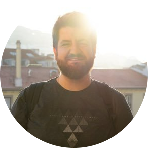

|  |
Cristiano Z.Founder of The Code Roastery Senior Test Automation Engineer Test automation engineer certified by ISTQB with CTFL-AT certification. QA since 2013, from mid 2018 focused in test automation. Worked on different testing processes: management, reporting, planning, execution, and automation. I have dealt with both web and cloud-based systems using agile methodologies. I have experience with mixed cultures and different size teams. Contact me via Linkedin |
| Dates | Position | Tech Stack |
|---|---|---|
| 2021 - Current | Test Framework Analyst / QA Automation Engineer Blue Prism is one of the top players in robotic process automation market, here I am working in the test framework team developing features to improve our test frameworks to help our QA teams achieve their goals. |
Blue Prism Enterprise, RPA, Automate, Test Automation, C#, Specflow, Test Framework, Process Automation, QA automation engineer, QA automation analyst. |
| 2020 - 2021 | Test Framework Analyst / QA Automation Engineer In this role I used to implement and make improvements in the test automation framework used by teams, also did the creation of test cases and test reports for the management. |
Selenium, Bitbucket, UFT One (formerly QTP), Robot Framework, Appium, Python, JIRA and XRay. |
| 2019 - 2020 | QA Automation Engineer Blueprint: Our team used SCRUM and I worked alongside other test analysts writing, executing, and managing test cases on JIRA using stories as documentation. Also used the Robot Framework to do test automation scripts. |
HTML, CSS, JQuery, SCRUM, REST, Postman, Selenium, Robot Framework. |
| 2018 - 2019 | Senior Software Test Engineer Claro SMART 3.0: I was the only test analyst on our SCRUM team, and performed writing, executing, and managing test cases inside JIRA tool using stories as documentation. Also, I did performance tests, REST and SOAP tests, data management (select, insert, update, delete) on Oracle DB, and implemented BDD to make automated scripts using Selenium + Cucumber |
JAVA, HTML, CSS, Oracle DB, JQuery, AngularJS, SCRUM, Postman, JMeter, SoapUI, REST, SOAP, BDD, Selenium, Cucumber. |
| 2015 - 2018 | Software Test Engineer Ciashop E-commerce Framework: Our team used SCRUM and I participated in all ceremonies: writing, executing, and managing test cases inside JIRA tool using stories as documentation. I also did performance tests, REST (API) and SOAP (Webservices) tests managed data (select, insert, update, delete) on SQL server, and also used to write automation scripts using BDD format and Specflow. |
ASP.NET MVC, C#, CSS, JQuery, BDD, HTML, Entity Framework, Specflow, SQL Server, JIRA, User Story, XML, SCRUM, Selenium, Postman, JMeter, Webservice Studio, SoapUI REST, SOAP. |
| 2013 - 2015 | Junior Software Test Engineer HSBC Core Banking: Our team used the waterfall development model and had more than 10 test analysts working together writing and executing test cases inside the HP Quality Center tool, using use cases as documentation.HSBC Mortgage: This was my first experience with SCRUM and I was the only test analyst. I coordinated with other areas in the bank doing analysis, creation, and execution of test cases until the pilot project went live. HSBC HPA Replacement: The strategy used on this project was the same as the “HSBC Core Bank”, at this project I worked with 15+ test analysts. |
JAVA, HTML, CSS, JAVA, Oracle DB, HP Quality Center, Use Cases, MVC, WATERFALL, SCRUM, REST, SOAP. |
| Test Automation | ⭐⭐⭐⭐⭐ | Test Management | ⭐⭐⭐⭐⭐ | Test Reporting | ⭐⭐⭐⭐⭐ |
| Functional Tests | ⭐⭐⭐⭐⭐ | Regression Tests | ⭐⭐⭐⭐⭐ | Functional Testing | ⭐⭐⭐⭐⭐ |
| Performance Testing | ⭐⭐⭐ | Development of Test Frameworks | ⭐⭐⭐ |